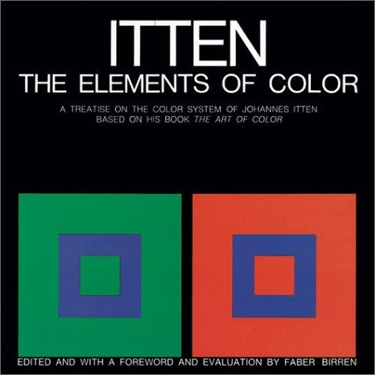

Branch 06
Readings and Hobbies
Book Club Books
Visit the book club-
Manufacturing Consent
-
Talking to Strangers
-
Catch-22
-
Eichmann in Jerusalem: A Report on the Banality of Evil
-
Currently reading
Seeing Like a State
Personal Interest Books
-
From Third World to First: The Singapore Story
-
History of the World
-
The Worldly Philosophers
-
The Story of Philosophy
-

The Elements of Colour
-
Steve Jobs
Blog
@ster_huang